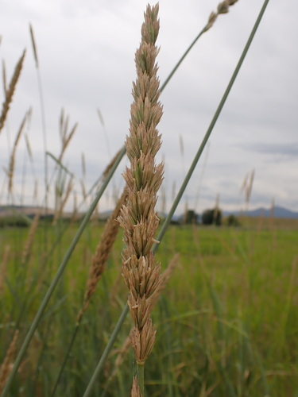
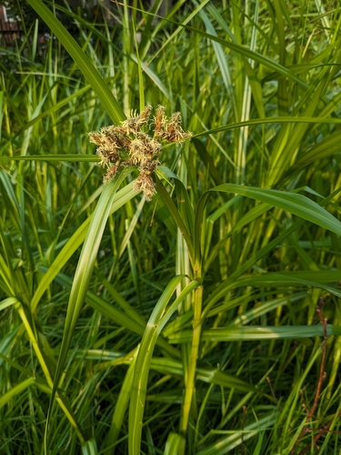

Grasses and sedges: straw and green seed heads
Grasses and sedges are grouped separately: they are wind-pollinated, so what you see is the seed head.
81 plants
 W. Terry Hunefeld, some rights reserved (CC BY), uploaded by W. Terry Hunefeld") Alkali BulrushBolboschoenus maritimusAlkali Cord GrassSpartina gracilis
Alkali BulrushBolboschoenus maritimusAlkali Cord GrassSpartina gracilis Matt Lavin, some rights reserved (CC BY-SA)") Alpine BluegrassPoa alpina
Alpine BluegrassPoa alpina Awned SedgeCarex atherodes
Awned SedgeCarex atherodes Sigitas Juzėnas, some rights reserved (CC BY), uploaded by Sigitas Juzėnas") Beaked SedgeCarex rostrataBebb's SedgeCarex bebbiiBig BluestemAndropogon gerardii
Beaked SedgeCarex rostrataBebb's SedgeCarex bebbiiBig BluestemAndropogon gerardii Owen Strickland, some rights reserved (CC BY), uploaded by Owen Strickland") Big-head RushJuncus vaseyi
Big-head RushJuncus vaseyi Matt Berger, some rights reserved (CC BY), uploaded by Matt Berger") Blue Grama GrassBouteloua gracilis
Blue Grama GrassBouteloua gracilis Matt Lavin, some rights reserved (CC BY-SA)") Bluebunch FescueFestuca idahoensis
Bluebunch FescueFestuca idahoensis Matt Lavin, some rights reserved (CC BY)") Bluejoint Reed GrassCalamagrostis canadensisCanada Rice GrassPiptatherum canadense
Bluejoint Reed GrassCalamagrostis canadensisCanada Rice GrassPiptatherum canadense Canada Wild RyeElymus canadensisCommon Scouring-rushEquisetum hyemale
Canada Wild RyeElymus canadensisCommon Scouring-rushEquisetum hyemale aarongunnar, some rights reserved (CC BY), uploaded by aarongunnar") Common Tall Manna GrassGlyceria grandis
Common Tall Manna GrassGlyceria grandis Matt Lavin, some rights reserved (CC BY)") Creeping SpikerushEleocharis palustrisCyperus-like SedgeCarex pseudocyperus
Creeping SpikerushEleocharis palustrisCyperus-like SedgeCarex pseudocyperus Matt Lavin, some rights reserved (CC BY-SA)") Drooping Wood-reedCinna latifolia
Drooping Wood-reedCinna latifolia Matt Lavin, some rights reserved (CC BY-SA)") Drummond's RushJuncus drummondii
Drummond's RushJuncus drummondii Matt Berger, some rights reserved (CC BY), uploaded by Matt Berger") Foothills Rough FescueFestuca campestris
Foothills Rough FescueFestuca campestris Jason Hollinger, some rights reserved (CC BY)") Fowl Manna GrassGlyceria striata
Fowl Manna GrassGlyceria striata Matt Lavin, some rights reserved (CC BY-SA)") Fringed BromeBromus ciliatus
Fringed BromeBromus ciliatus
Giant Wild RyeLeymus cinereus Matt Berger, some rights reserved (CC BY), uploaded by Matt Berger") Golden SedgeCarex aurea
Golden SedgeCarex aurea Matt Lavin, some rights reserved (CC BY)") Green Needle GrassNassella viridula
Green Needle GrassNassella viridula Hairy Wild RyeLeymus innovatusHooker's Oat GrassAvenula hookeri
Hairy Wild RyeLeymus innovatusHooker's Oat GrassAvenula hookeri Indigenous RicegrassEriocoma hymenoides
Indigenous RicegrassEriocoma hymenoides Douglas Goldman, some rights reserved (CC BY-SA), uploaded by Douglas Goldman") June GrassKoeleria macranthaKnotted RushJuncus nodosus
June GrassKoeleria macranthaKnotted RushJuncus nodosus aarongunnar, some rights reserved (CC BY), uploaded by aarongunnar") Lakeshore SedgeCarex lacustris
Lakeshore SedgeCarex lacustris Colin Meurk, some rights reserved (CC BY-SA), uploaded by Colin Meurk") Little BluestemSchizachyrium scoparium
Little BluestemSchizachyrium scoparium Jason Grant, some rights reserved (CC BY), uploaded by Jason Grant") Meadow SedgeCarex praticola
Meadow SedgeCarex praticola crothfels, some rights reserved (CC BY)") Mountain BromeBromus marginatusNarrowleaf Cotton-grassEriophorum angustifolium
Mountain BromeBromus marginatusNarrowleaf Cotton-grassEriophorum angustifolium Trevor Van Loon, some rights reserved (CC BY), uploaded by Trevor Van Loon") Needle and Thread GrassHesperostipa comataNeedle Spike-rushEleocharis acicularis
Needle and Thread GrassHesperostipa comataNeedle Spike-rushEleocharis acicularis Bob Miller, some rights reserved (CC BY), uploaded by Bob Miller") Northern Wheat GrassElymus lanceolatus
Northern Wheat GrassElymus lanceolatus Matt Berger, some rights reserved (CC BY), uploaded by Matt Berger") Parry's OatgrassDanthonia parryi
Parry's OatgrassDanthonia parryi Matt Berger, some rights reserved (CC BY), uploaded by Matt Berger") Plains MuhlyMuhlenbergia cuspidata
Plains MuhlyMuhlenbergia cuspidata USFWS Mountain-Prairie, some rights reserved (CC BY)") Porcupine GrassHesperostipa spartea
Porcupine GrassHesperostipa spartea aarongunnar, some rights reserved (CC BY), uploaded by aarongunnar") Porcupine SedgeCarex hystericina
Porcupine SedgeCarex hystericina naturalist charlie, some rights reserved (CC BY), uploaded by naturalist charlie") Poverty Oat GrassDanthonia spicataPrairie Cord GrassSpartina pectinata
Poverty Oat GrassDanthonia spicataPrairie Cord GrassSpartina pectinata Douglas Goldman, some rights reserved (CC BY-SA), uploaded by Douglas Goldman") Prairie DropseedSporobolus heterolepis
Prairie DropseedSporobolus heterolepis Prairie Wedge GrassSphenopholis obtusataPurple Oat GrassSchizachne purpurascensPurple Reed GrassCalamagrostis purpurascensRaymond's SedgeCarex raymondiiRichardson's NeedlegrassEriocoma richardsonii
Prairie Wedge GrassSphenopholis obtusataPurple Oat GrassSchizachne purpurascensPurple Reed GrassCalamagrostis purpurascensRaymond's SedgeCarex raymondiiRichardson's NeedlegrassEriocoma richardsonii
River BulrushBolboschoenus fluviatilis Jim Morefield, some rights reserved (CC BY)") Rocky Mountain FescueFestuca saximontanaRough FescueFestuca hallii
Rocky Mountain FescueFestuca saximontanaRough FescueFestuca hallii Roberto Daniel Avila, some rights reserved (CC BY), uploaded by Roberto Daniel Avila") SaltgrassDistichlis spicataSand GrassCalamovilfa longifolia
SaltgrassDistichlis spicataSand GrassCalamovilfa longifolia Sandberg BluegrassPoa secundaSartwell's SedgeCarex sartwellii
Sandberg BluegrassPoa secundaSartwell's SedgeCarex sartwellii Cheng-Tao Lin, some rights reserved (CC BY), uploaded by Cheng-Tao Lin") Sheep FescueFestuca ovina
Sheep FescueFestuca ovina psweet, some rights reserved (CC BY-SA), uploaded by psweet") Sideoats GramaBouteloua curtipendula
Sideoats GramaBouteloua curtipendula Matt Lavin, some rights reserved (CC BY)") Slender WheatgrassElymus trachycaulus
Slender WheatgrassElymus trachycaulus Nolan Exe, some rights reserved (CC BY), uploaded by Nolan Exe") Slough GrassBeckmannia syzigachne
Slough GrassBeckmannia syzigachne Matt Lavin, some rights reserved (CC BY-SA)") Small-fruited BulrushScirpus microcarpus
Small-fruited BulrushScirpus microcarpus Matt Lavin, some rights reserved (CC BY-SA)") Smooth Wild RyeElymus glaucus
Smooth Wild RyeElymus glaucus Jim Morefield, some rights reserved (CC BY)") Spike TrisetumKoeleria spicata
Spike TrisetumKoeleria spicata Matt Lavin, some rights reserved (CC BY-SA)") Sprengel's SedgeCarex sprengelii
Sprengel's SedgeCarex sprengelii aarongunnar, some rights reserved (CC BY), uploaded by aarongunnar") SweetgrassAnthoxanthum hirtum
SweetgrassAnthoxanthum hirtum aarongunnar, some rights reserved (CC BY), uploaded by aarongunnar") SwitchgrassPanicum virgatum
SwitchgrassPanicum virgatum Douglas Goldman, some rights reserved (CC BY-SA), uploaded by Douglas Goldman") Three-square RushSchoenoplectus pungens
Three-square RushSchoenoplectus pungens Michael J. Papay, some rights reserved (CC BY), uploaded by Michael J. Papay") TicklegrassAgrostis scabra
TicklegrassAgrostis scabra aarongunnar, some rights reserved (CC BY), uploaded by aarongunnar") Torrey's RushJuncus torreyiTufted HairgrassDeschampsia caespitosa
Torrey's RushJuncus torreyiTufted HairgrassDeschampsia caespitosa Tufted Tall Manna GrassGlyceria elataTurned SedgeCarex retrorsa
Tufted Tall Manna GrassGlyceria elataTurned SedgeCarex retrorsa Юлия, some rights reserved (CC BY), uploaded by Юлия") Variegated HorsetailEquisetum variegatum
Variegated HorsetailEquisetum variegatum mark-groeneveld, some rights reserved (CC BY), uploaded by mark-groeneveld") Water SedgeCarex aquatilis
Water SedgeCarex aquatilis Dean Wm. Taylor, some rights reserved (CC BY)") Western FescueFestuca occidentalisWestern Porcupine GrassHesperostipa curtisetaWestern WheatgrassPascopyrum smithiiWhite-grained Mountain Rice GrassOryzopsis asperifolia
Western FescueFestuca occidentalisWestern Porcupine GrassHesperostipa curtisetaWestern WheatgrassPascopyrum smithiiWhite-grained Mountain Rice GrassOryzopsis asperifolia aarongunnar, some rights reserved (CC BY), uploaded by aarongunnar") Wire RushJuncus balticus
Wire RushJuncus balticus aarongunnar, some rights reserved (CC BY), uploaded by aarongunnar") Woolly SedgeCarex pellita
Woolly SedgeCarex pellita